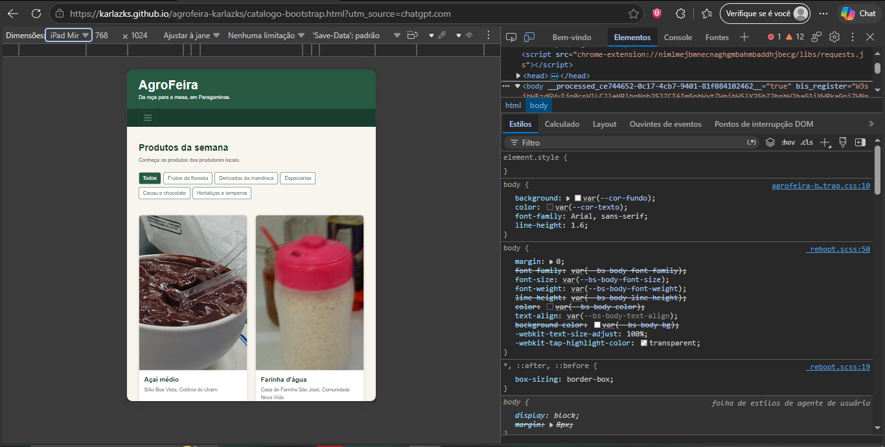
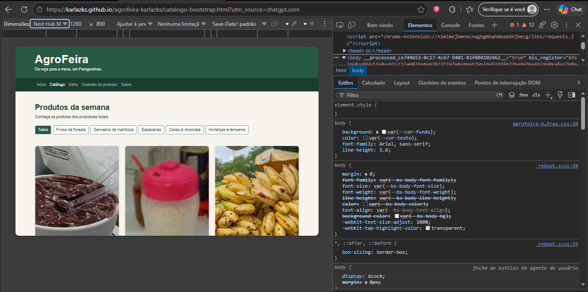
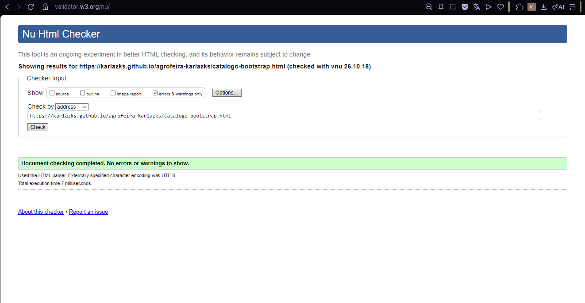

Comparativo: CSS autoral e Bootstrap
Este relatório compara o catálogo original da AgroFeira, estilizado com CSS próprio, com uma segunda versão que utiliza Bootstrap 5.3.8. A comparação considera transferência de dados, desempenho, quantidade de CSS e estrutura do cartão de açaí.
1. Metodologia
As páginas foram testadas no Chrome, com a área de visualização de 800 × 1280 px. Para as medições de rede, o cache foi desativado. Para o LCP, o cache de rede foi desativado e CPU e rede ficaram em No throttling. O LCP foi medido cinco vezes por página; a mediana corresponde ao terceiro valor após ordenar os resultados.
2. Medições
| Critério | CSS autoral | Bootstrap |
|---|---|---|
| CSS transferido | 14,0 kB (inclui 1,6 kB do CSS do Google Fonts) | 35,3 kB (33,8 + 0,731 + 0,800 kB) |
| Fontes | 38,3 kB | 0 kB |
| Imagens | 390 kB | 388 kB |
| Documento HTML | 8,5 kB | 2,4 kB |
| Total transferido | 472 kB | 476 kB |
| LCP mediano | 0,53 s (0,51; 0,66; 0,35; 0,53; 0,55 s) | 0,68 s (1,80; 0,64; 0,69; 0,68; 0,45 s) |
| Linhas de CSS próprio | 483 (1 + 44 + 41 + 60 + 335 + 2) | 156 (41 + 115) |
| Cartão de açaí | 7 elementos; 4 nomes de classe distintos | 8 elementos; 16 nomes de classe distintos, sem contar o selo |
3. Leitura dos números
Os bytes. O Bootstrap transferiu 35,3 kB de CSS, contra 14,0 kB da versão autoral. Entretanto, a versão autoral carregou 38,3 kB de fonte, enquanto a versão Bootstrap não transferiu arquivos de fonte nessa medição. O total da rede foi de 472 kB na versão autoral e 476 kB na versão Bootstrap. Portanto, o CSS do framework é maior, mas o total transferido depende também dos demais recursos carregados.
O desempenho. O LCP mediano foi de 0,53 s na versão autoral e 0,68 s na versão Bootstrap. Nestas medições, o catálogo autoral apresentou o menor valor mediano. Isso não prova que uma implementação será sempre mais rápida: o resultado pode variar conforme o dispositivo, a rede, o cache e o conteúdo visível na página.
O tamanho do documento e o CSS próprio. O HTML Bootstrap transferiu 2,4 kB, enquanto o original transferiu 8,5 kB. O CSS próprio somou 156 linhas na versão Bootstrap, considerando tokens.css e agrofeira-bootstrap.css, contra 483 linhas na versão autoral. A redução foi de 327 linhas, cerca de 67,7%. Isso reduz a quantidade de CSS mantido diretamente no projeto, mas não inclui as 33,8 kB do arquivo externo do Bootstrap.
Limites da medição. Os resultados descrevem apenas as duas páginas e as condições testadas. O total de transferência não mede, sozinho, a facilidade de manutenção, a acessibilidade ou o tempo necessário para personalizar os componentes. O LCP também é apenas uma métrica de desempenho. A quantidade de requisições, isoladamente, não serve como critério para decidir qual versão é melhor.
4. Capturas de tela
Inclua as oito capturas abaixo, com legendas que indiquem o que cada uma comprova.






5. Conclusão
Eu escolheria o Bootstrap quando a prioridade fosse reduzir o CSS próprio mantido no projeto, que caiu de 483 para 156 linhas, mas avaliaria outra solução quando a prioridade fosse minimizar o CSS transferido, que foi de 14,0 kB na versão autoral contra 35,3 kB na versão Bootstrap.